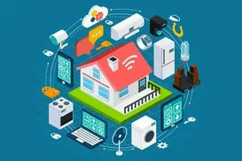

Интернет вещей – это система взаимосвязанных вычислительных устройств, которые могут собирать и передавать данные по беспроводной сети без участия человека.

Речь идет не только о ноутбуках и смартфонах. Почти все устройства с кнопкой включения/выключения потенциально могут подключиться к интернету и стать частью интернета вещей.